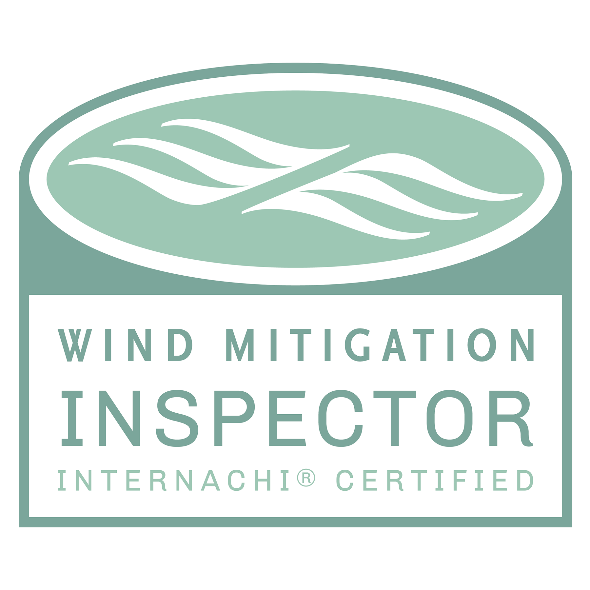
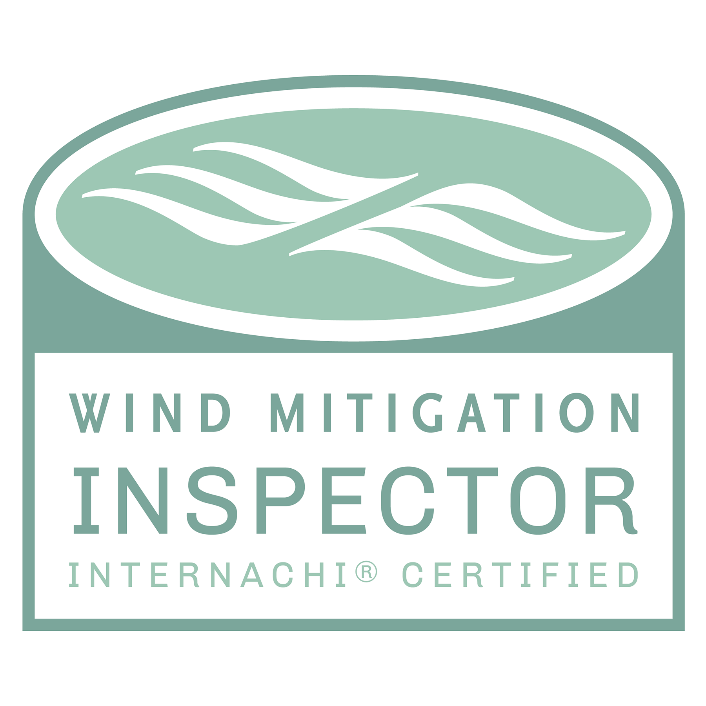
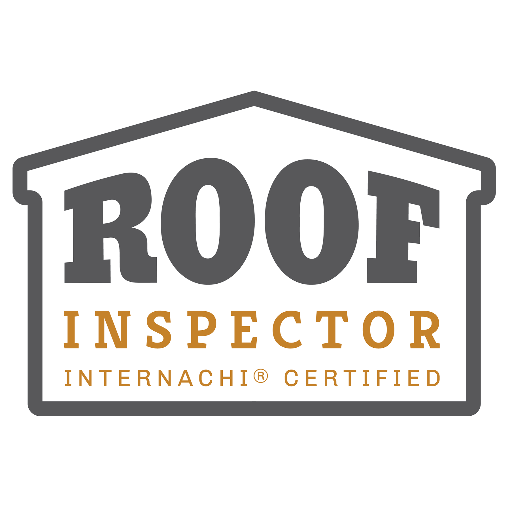
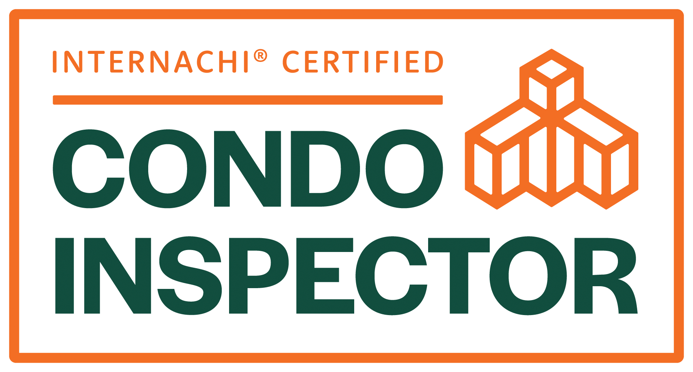
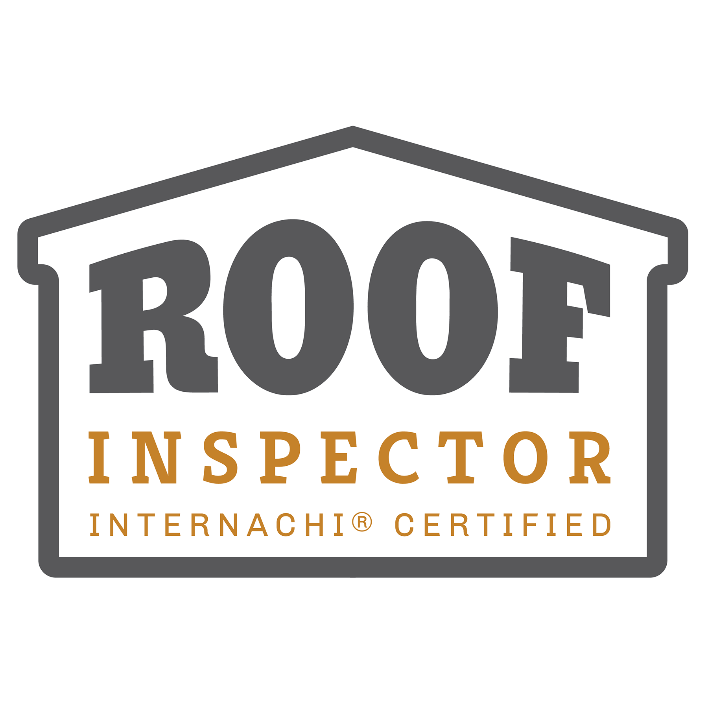
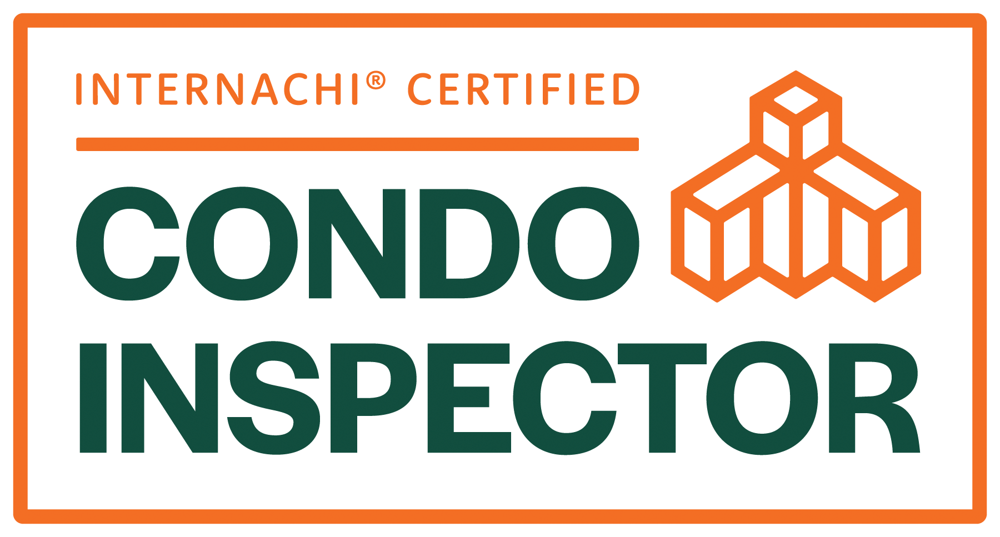

Licensed • Certified • Trusted by Florida Homeowners
Schedule Your InspectionI'm a licensed Certified Professional Home Inspector with over 20 years of experience in real estate, property renovations, and building systems. I'm skilled in identifying defects, evaluating roofs, electrical, plumbing, HVAC, and structural components, and delivering clear, detailed inspection reports. A proud father of three, I bring integrity and diligence to every inspection. Whether you’re buying, selling, or securing your home, you can rest assured that the Keystone Home Inspections team will provide you with accurate, comprehensive results and peace of mind.
 

 



Our inspection reports are designed for clarity and confidence. Each report includes high-resolution images, detailed findings, and actionable recommendations so that you fully understand your property's condition. Delivered digitally within 24 hours, they’re easy to read and ready to share with agents or insurance providers.
Buying a home is one of the biggest investments you’ll ever make. At Keystone Home Inspections, we’re committed to helping you protect that investment with thorough, accurate inspections you can trust.
Request a Call BackHave questions or ready to schedule your inspection? Fill out the form below, and we’ll contact you promptly.
We proudly serve Jupiter, Palm Beach County, Martin County, St. Lucie County, Okeechobee County, and Indian River County.